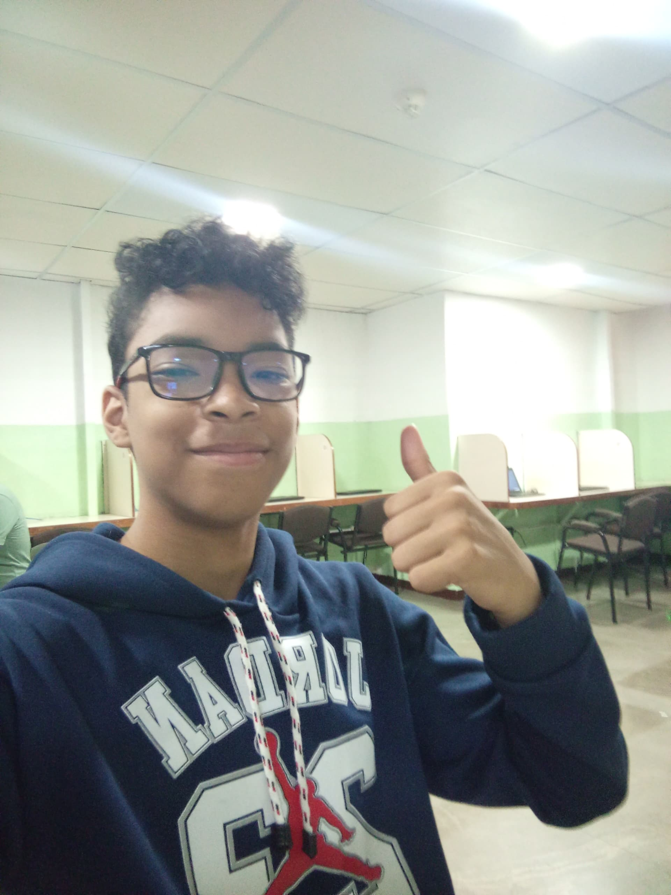
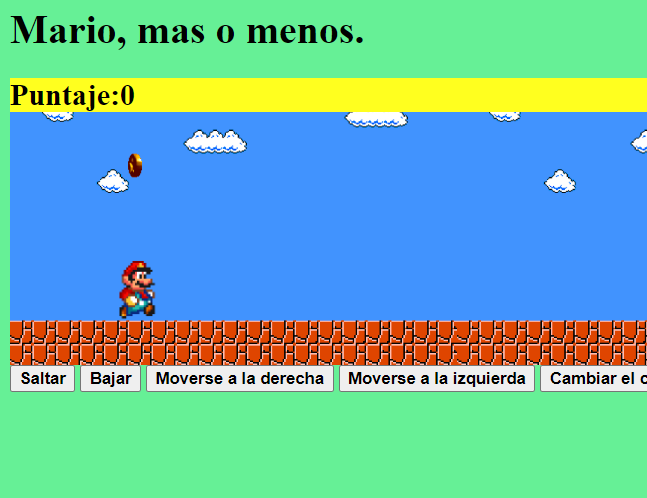

Sebastian Donaire
¡Hola!
Soy Sebastian Donaire, un joven de Espacio Educa que quiere enseñarte sus habilidades en programación y los proyectos que ha realizado.
Más sobre mí:
- Me gusta ir al gimnasio
- Me gusta ayudar a mi familia
- Juego béisbol
- Me gustan los videojuegos
- Me apasiona la tecnología, la programación y todo lo relacionado
- Disfruto cocinar
- Soy bueno en matemáticas
- Puedo resolver problemas rápidamente
- No tomo las cosas de manera personal
Mis habilidades
Tengo la capacidad de entender rápidamente las cosas cuando se explican bien.
Soy bueno en voleibol y fútbol, aunque no los practique regularmente, tengo buena resistencia en los deportes.
Voy al gimnasio y me esfuerzo por superarme cada día y ser una mejor persona.
Las experiencias que he tenido me han ayudado a fortalecer mi mentalidad y trabajar en mejorarla día a día.
Soy bueno haciendo amigos y escuchando a las personas para brindarles apoyo.
Mis proyectos
Mi primer proyecto fue una calculadora en la página web Popcode.

Este proyecto fue uno de los primeros que creé con ayuda de los profesores de Espacio Educa.
🡰 Click en la imagen para ver el código
En mi segundo proyecto, aprendí más sobre programación y creé una página web describiendo a Germán Garmendia con CSS.

En este proyecto buscaba perfeccionar mis habilidades con CSS.
🡰 Click en la imagen para ver el código
Mi tercer proyecto fue recrear Super Mario Bros utilizando botones para manipularlo.
En este proyecto aprendimos más sobre JavaScript y lo utilizamos para crear un Mario funcional mediante botones.
🡰 Click en la imagen para ver el código